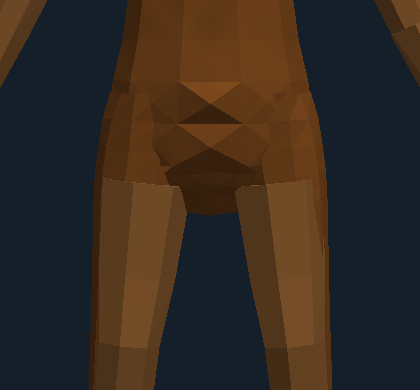
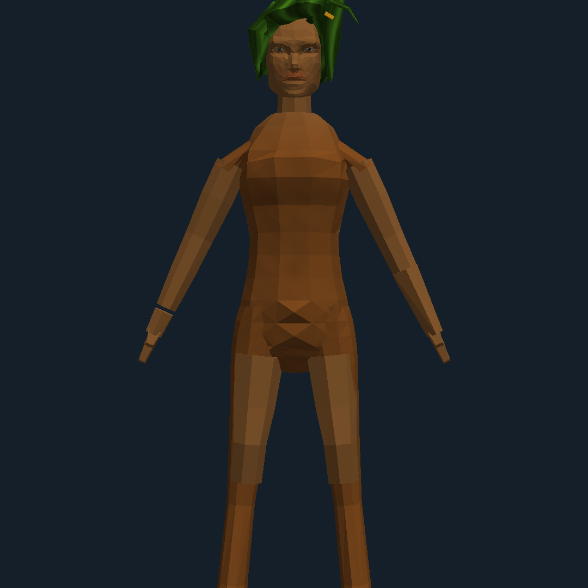

R36KQR36KR
R36KQR36KR- 정점 및 본
- 2,100△ / 63 bones
- 재질 기준
- R36KP 원본 유지
- 수정 대상
- 허벅지 상단만
우측 모델의 얼굴·헤어와 원본 스킨 텍스처는 변경하지 않았습니다. 단, 몸통·다리 간 실제 연결이 위상학적으로 용접된 것은 아닙니다. R36KR의 품질 판단에는 게임 엔진 포즈 캡처가 추가로 필요합니다.
실제 GLB에서 생성한 소프트웨어 렌더를 겹쳐 비교합니다. 왼쪽은 접합부 비교, 오른쪽은 전신 비교입니다. 게임 엔진 렌더가 아닙니다.

R36KQR36KR
R36KQR36KR우측 모델의 얼굴·헤어와 원본 스킨 텍스처는 변경하지 않았습니다. 단, 몸통·다리 간 실제 연결이 위상학적으로 용접된 것은 아닙니다. R36KR의 품질 판단에는 게임 엔진 포즈 캡처가 추가로 필요합니다.